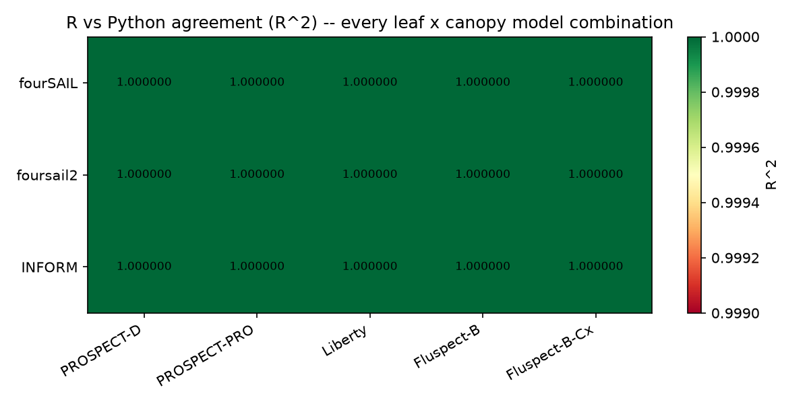
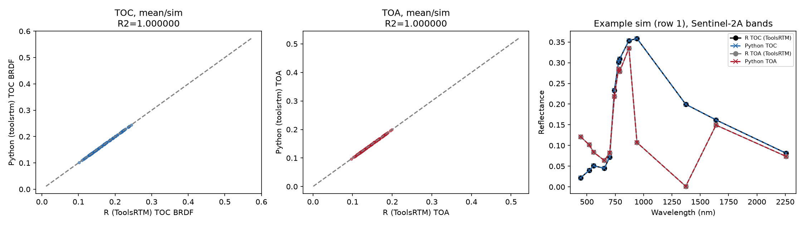
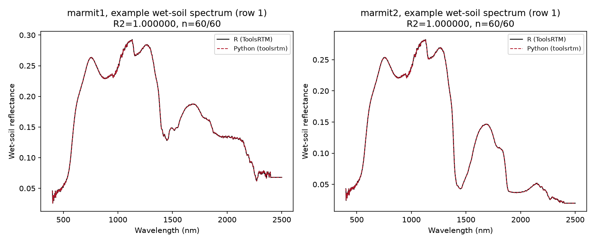
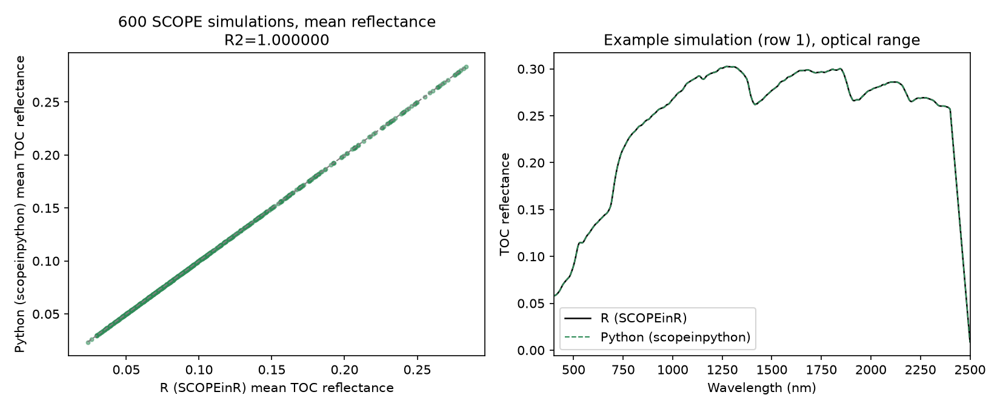
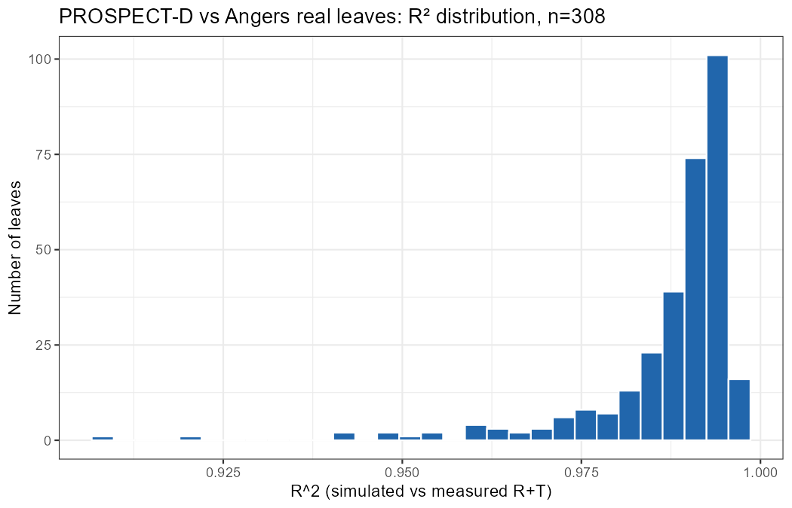
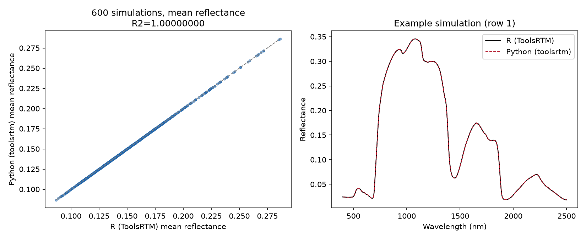

Model comparison & verification
RTM-Suite ships every model twice — once in R, once in Python. This page runs independent simulations from shared, randomly-sampled Look-Up Tables through both language implementations and compares them directly, plus one section that validates a model against real measured data rather than the other language. Coverage spans leaf optics, canopy radiative transfer, soil (dry-soil mixing and wet-soil MARMIT), the full soil-plant-atmosphere chain (SPART), and the full coupled SCOPE 2.1 model — the same robustness checks any user could re-run themselves, with the scripts linked in each section.
R vs PythonLeaf × canopy models — all 15 combinations
Every leaf model (PROSPECT-D, PROSPECT-PRO, Liberty, Fluspect-B, Fluspect-B-Cx) run through every canopy model (fourSAIL, foursail2, INFORM) — 15 combinations, 100 simulations each from an independent randomly-sampled LUT per combination, full reflectance spectrum compared wavelength-by-wavelength. Liberty combinations show a small fraction of rows excluded on one side (89–93/100 valid) where an extreme random parameter draw pushed the iterative Liberty solver out of its valid domain in one language before the other — every row that did converge on both sides agrees to Liberty's own precision (RMSE ≈ 10-12, vs ≈10-16 for the other four leaf models).


| Canopy model | Leaf model | Valid sims | RMSE | R² |
|---|---|---|---|---|
| fourSAIL | PROSPECT-D | 100/100 | 8.2 × 10-16 | 1.00000000 |
| fourSAIL | PROSPECT-PRO | 100/100 | 5.4 × 10-16 | 1.00000000 |
| fourSAIL | Liberty | 89/100 | 4.0 × 10-12 | 1.00000000 |
| fourSAIL | Fluspect-B | 100/100 | 4.2 × 10-16 | 1.00000000 |
| fourSAIL | Fluspect-B-Cx | 100/100 | 5.4 × 10-16 | 1.00000000 |
| foursail2 | PROSPECT-D | 100/100 | 4.3 × 10-16 | 1.00000000 |
| foursail2 | PROSPECT-PRO | 100/100 | 2.9 × 10-16 | 1.00000000 |
| foursail2 | Liberty | 93/100 | 5.3 × 10-12 | 1.00000000 |
| foursail2 | Fluspect-B | 100/100 | 3.3 × 10-16 | 1.00000000 |
| foursail2 | Fluspect-B-Cx | 100/100 | 3.2 × 10-16 | 1.00000000 |
| INFORM | PROSPECT-D | 100/100 | 6.0 × 10-16 | 1.00000000 |
| INFORM | PROSPECT-PRO | 100/100 | 3.3 × 10-16 | 1.00000000 |
| INFORM | Liberty | 92/100 | 4.9 × 10-12 | 1.00000000 |
| INFORM | Fluspect-B | 100/100 | 3.6 × 10-16 | 1.00000000 |
| INFORM | Fluspect-B-Cx | 100/100 | 3.6 × 10-16 | 1.00000000 |
R vs PythonSoil & atmosphere — SPART, MARMIT-1, MARMIT-2
Beyond leaf/canopy optics: the full soil-plant-atmosphere chain (SPART, TOC and TOA reflectance for a real sensor) and wet-soil reflectance (MARMIT, both published versions).
SPART — soil-plant-atmosphere, Sentinel-2A bands
100 simulations, one shared LUT (getLUT(inputsSPART), seed 21), fixed realistic sea-level clear-sky atmosphere (matching the tutorial's own choice to avoid getLUT()'s known unphysical-atmosphere edge case at its widest default ranges). Both TOC canopy-BRDF reflectance and TOA (after SMAC atmospheric correction) compared, all 13 Sentinel-2A bands.

| Product | Valid sims | RMSE | R² |
|---|---|---|---|
| TOC (canopy BRDF) | 100/100 | 4.2 × 10-16 | 1.00000000 |
| TOA (post SMAC atmospheric correction) | 100/100 | 6.4 × 10-15 | 1.00000000 |
MARMIT — wet-soil reflectance, both model versions
60 random draws (soil ID 1–17 from the bundled Bablet_2016 database, water-layer thickness L 0.01–0.15 cm, wet-surface fraction eps 0.1–0.9), run through both MARMIT-1 (Bablet et al. 2018, the simpler original model) and MARMIT-2 (adds soil-particle refractive-index/size effects) in both languages.

| Version | Valid sims | RMSE | Max abs diff | R² |
|---|---|---|---|---|
| MARMIT-1 | 60/60 | 3.5 × 10-10 | 1.7 × 10-8 | 1.00000000 |
| MARMIT-2 | 60/60 | 1.8 × 10-8 | 1.7 × 10-7 | 1.00000000 |
R vs PythonFull SCOPE 2.1
600 SCOPE simulations, one shared LUT (getLUT.SCOPE(), seed 7), default options — the full coupled soil/canopy/photosynthesis/energy-balance/fluorescence pipeline, not just radiative transfer. Top-of-canopy reflectance compared across 2,053 of 2,162 spectral-domain wavelengths (the remaining ~109 are a structural, non-contiguous gap matching atmospheric water-vapor absorption windows around 1400/1900/2500 nm — excluded from both sides rather than dropping otherwise-valid simulations).

| Metric | Value |
|---|---|
| Simulations compared | 600 / 600 |
| Wavelengths compared | 2,053 / 2,162 |
| RMSE | 2.5 × 10-16 |
| Max absolute difference | 4.4 × 10-15 |
| Bias (mean Python − R) | 7.4 × 10-18 |
| R² (Python predicting R) | 1.00000000 |
Real data not R vs PythonPROSPECT-D vs. 308 real measured leaves (Angers database)
Everything above checks that R and Python agree with each other — strong evidence the Python port is faithful, but not by itself evidence that either implementation matches reality. This section instead validates PROSPECT-D against the bundled Angers leaf-optics database (308 real leaves with lab-measured chlorophyll a+b, carotenoids, anthocyanin, equivalent water thickness and leaf mass per area, paired with lab-measured reflectance and transmittance spectra) — the same kind of dataset PROSPECT itself was calibrated and validated against in the original literature. Measured biochemical traits go in as-is; the mesophyll structure parameter N (not independently measurable) is fit per leaf over a 1.0–3.0 grid, the standard PROSPECT calibration procedure.


| Metric | Value |
|---|---|
| Leaves validated | 308 / 308 |
| Best-fit N (mesophyll structure) | median 1.475, range 1.0–2.7 — matches published typical values |
| RMSE (R + T combined, 0–1 units) | median 0.0147, 95th pct 0.0277 |
| R² (simulated vs. measured) | median 0.9912, mean 0.9875, worst leaf 0.9082 |
Liberty, Fluspect and INFORM don't have an equivalent bundled field/lab dataset in this repo, so this real-data check currently covers PROSPECT-D only (the leaf model both the Angers database and the wider PROSPECT literature target directly).
R vs PythonPROSPECT-D + fourSAIL, 600-simulation deep dive
A larger single-combination run for extra statistical depth on the most commonly used pairing: 600 simulations, one shared LUT (getLUT(), seed 42), full 400–2500 nm reflectance spectrum compared wavelength-by-wavelength.

| Metric | Value |
|---|---|
| Simulations compared | 600 / 600 |
| RMSE (all wavelengths × all sims) | 8.1 × 10-16 |
| Max absolute difference | 1.2 × 10-14 |
| Bias (mean Python − R) | 1.8 × 10-16 |
| R² (Python predicting R) | 1.00000000 |
Reproduce this yourself
Each comparison is two scripts under Scripts/Comparison/: an R script builds the shared LUT and the R-side reference output, and a companion Python script reads that same LUT, runs the Python port, and produces the figure + error stats above.
# Leaf x canopy models, all 15 combinationsRscript Scripts/Comparison/compare_R_Python_allmodels_600sims.Rpython Scripts/Comparison/compare_R_Python_allmodels_600sims.py# SPART + MARMIT (both versions)Rscript Scripts/Comparison/compare_R_Python_spart_marmit.Rpython Scripts/Comparison/compare_R_Python_spart_marmit.py# Full SCOPE 2.1Rscript Scripts/Comparison/compare_R_Python_scope_600sims.Rpython Scripts/Comparison/compare_R_Python_scope_600sims.py# PROSPECT-D + fourSAIL, 600-sim deep diveRscript Scripts/Comparison/compare_R_Python_toolsrtm_600sims.Rpython Scripts/Comparison/compare_R_Python_toolsrtm_600sims.py# PROSPECT-D vs. real measured leaves (Angers database, R only -- no Python port of this validation)Rscript Scripts/Comparison/validate_prospectD_vs_angers.R
This is a large-sample statistical comparison, complementary to the existing per-function precision verification (single test cases, checked to floating-point precision, 50 automated tests).